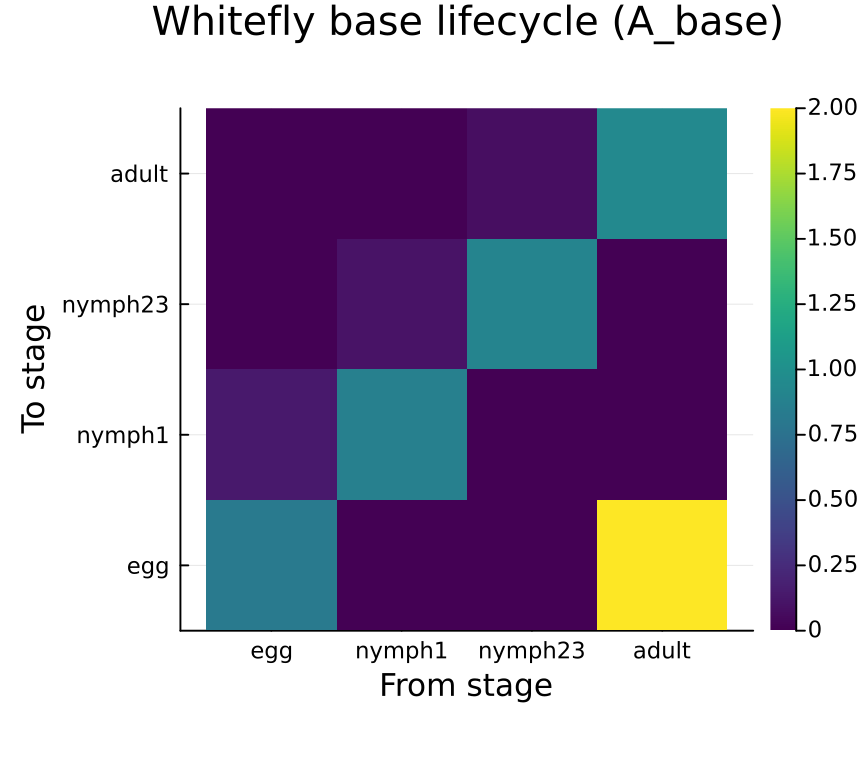
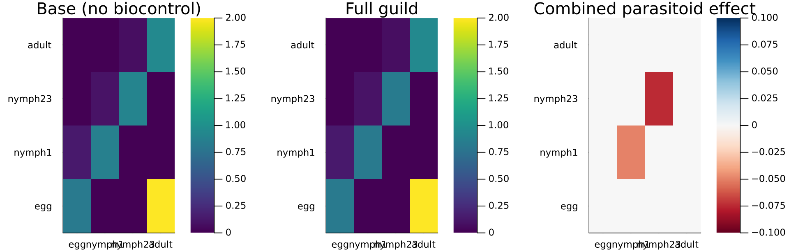
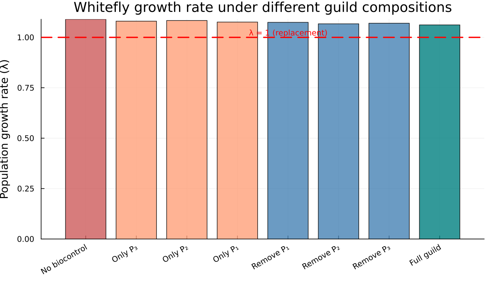
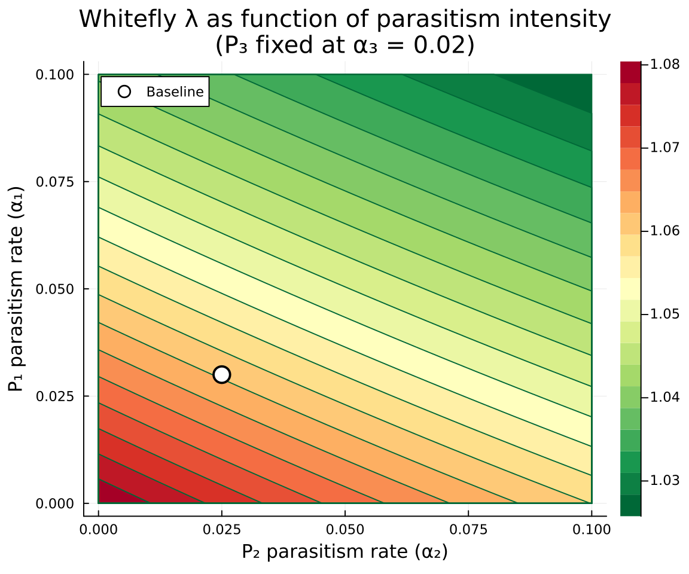
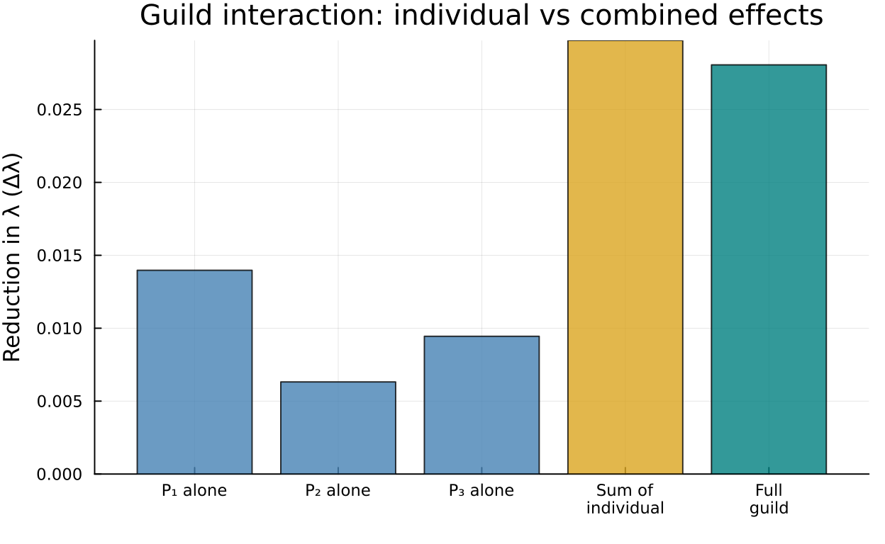
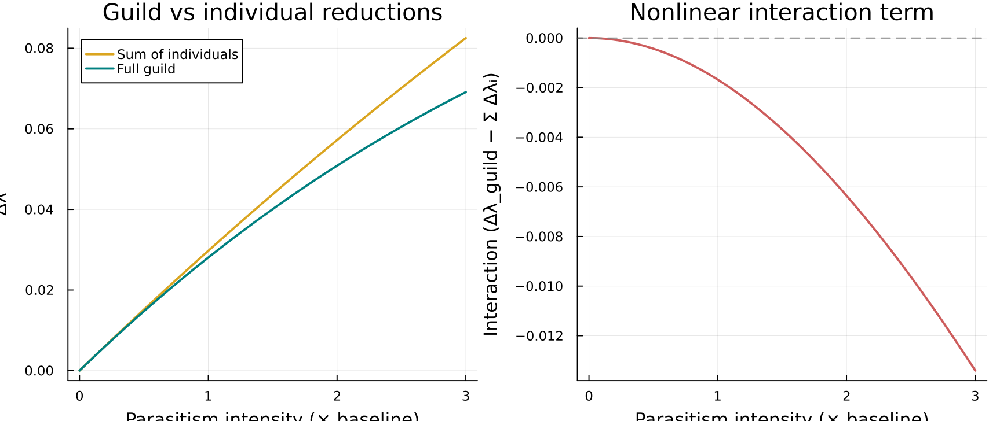

Enemy Guild Composition
Categorical Assembly of Multi-Parasitoid Biocontrol Models
Author
Simon Frost
Overview
Biological control of crop pests typically involves guilds of natural enemies — multiple parasitoid or predator species that jointly suppress pest populations. Modeling the joint effect of an enemy guild is a natural compositional problem: the pest lifecycle forms a base model, and each natural enemy adds a negative transition (additional mortality) to specific pest stages.
This vignette demonstrates how CategoricalPopulationDynamics.jl’s additive composition framework handles multi-species biocontrol. We model a cotton–whitefly–parasitoid system inspired by Schreiber et al. (2001), where three parasitoid species with different reproductive strategies attack different stages of the whitefly Bemisia tabaci.
The categorical insight is that the full model decomposes as:
<span class="math display">\ \mathbf{A}_{\text{full}} = \mathbf{A}_{\text{whitefly}} + \Delta\mathbf{A}_{P1} + \Delta\mathbf{A}\{P2} + \Delta\mathbf{A}\{P_3} \</span>
where each <span class="math inline">\\Delta\mathbf{A}_{Pi}\</span> is a sparse, negative perturbation capturing the mortality imposed by parasitoid <span class="math inline">\i\</span> on specific whitefly stages. This is exactly the additive kernel composition that `composetransitionsandoapply` implement.
Setup
using CategoricalPopulationDynamics
using CategoricalPopulationDynamics: ⊕, ⊘
using Catlab
using Catlab.CategoricalAlgebra
using Catlab.WiringDiagrams
using Catlab.Programs: @relation
using LinearAlgebra
using StructuredPopulationCore: lambda
using PlotsWhitefly Base Lifecycle
The whitefly (Bemisia tabaci) has four developmental stages: egg, early nymph (1st instar), late nymph (2nd–3rd instars), and adult. At 27°C during the cotton growing season, daily demographic rates are:
# Daily development rates (probability of advancing per day)
dev_egg = 0.14 # ~7 day egg stage
dev_nymph1 = 0.10 # ~10 day early nymph
dev_nymph23 = 0.07 # ~14 day late nymph
dev_adult = 0.05 # adult senescence rate
# Daily natural mortality rates
μ_egg = 0.05
μ_nymph1 = 0.04
μ_nymph23 = 0.03
μ_adult = 0.06
# Fecundity: eggs per adult female per day × sex ratio
fecundity = 0.5 * 4.0 # = 2.0 female eggs/day2.0From these rates, we compute daily stage-specific survival probabilities and transition rates:
# Survival probabilities
σ_egg = 1 - μ_egg # 0.95
σ_nymph1 = 1 - μ_nymph1 # 0.96
σ_nymph23 = 1 - μ_nymph23 # 0.97
σ_adult = 1 - μ_adult # 0.94
# Stasis: survive AND remain in current stage
stasis_egg = σ_egg * (1 - dev_egg) # 0.817
stasis_nymph1 = σ_nymph1 * (1 - dev_nymph1) # 0.864
stasis_nymph23 = σ_nymph23 * (1 - dev_nymph23) # 0.9021
stasis_adult = σ_adult # 0.94
# Progression: survive AND advance to next stage
prog_egg_to_n1 = σ_egg * dev_egg # 0.133
prog_n1_to_n23 = σ_nymph1 * dev_nymph1 # 0.096
prog_n23_to_ad = σ_nymph23 * dev_nymph23 # 0.0679
println("Stasis: egg=$(round(stasis_egg, digits=4)), n1=$(round(stasis_nymph1, digits=4)), ",
"n23=$(round(stasis_nymph23, digits=4)), adult=$(round(stasis_adult, digits=4))")
println("Progression: egg→n1=$(round(prog_egg_to_n1, digits=4)), ",
"n1→n23=$(round(prog_n1_to_n23, digits=4)), n23→ad=$(round(prog_n23_to_ad, digits=4))")Stasis: egg=0.817, n1=0.864, n23=0.9021, adult=0.94
Progression: egg→n1=0.133, n1→n23=0.096, n23→ad=0.0679Building the ValuedProjectionNet
We encode the whitefly lifecycle as three separate ValuedProjectionNet components — development (stage advancement), stasis (survival within stage), and fecundity (reproduction) — and merge them with the ⊕ operator. Because all three share the same stage set but have disjoint transition names, ⊕ cleanly combines them into a single net:
stages = [:egg, :nymph1, :nymph23, :adult]
whitefly_dev = ValuedProjectionNet(stages,
:development => [
(:egg => :nymph1) => prog_egg_to_n1,
(:nymph1 => :nymph23) => prog_n1_to_n23,
(:nymph23 => :adult) => prog_n23_to_ad])
whitefly_stasis = ValuedProjectionNet(stages,
:stasis => [
(:egg => :egg) => stasis_egg,
(:nymph1 => :nymph1) => stasis_nymph1,
(:nymph23 => :nymph23) => stasis_nymph23,
(:adult => :adult) => stasis_adult])
whitefly_fecundity = ValuedProjectionNet(stages,
:fecundity => [
(:adult => :egg) => fecundity])
whitefly = whitefly_dev ⊕ whitefly_stasis ⊕ whitefly_fecundity
println("Stages: ", stage_names(whitefly))
println("Transitions: ", transition_names(whitefly))Stages: [:egg, :nymph1, :nymph23, :adult]
Transitions: [:stasis, :development, :fecundity]Base projection matrix and growth rate
A_base = to_matrix(whitefly)
λ_base = lambda(A_base)
println("Whitefly base projection matrix:")
display(A_base)
println()
println("λ_base = ", round(λ_base, digits=6))
println("Without biocontrol, the pest population is ",
λ_base > 1 ? "GROWING (λ > 1)" : "stable or declining")Whitefly base projection matrix:
λ_base = 1.089855
Without biocontrol, the pest population is GROWING (λ > 1)
4×4 Matrix{Float64}:
0.817 0.0 0.0 2.0
0.133 0.864 0.0 0.0
0.0 0.096 0.9021 0.0
0.0 0.0 0.0679 0.94stages = String.(stage_names(whitefly))
heatmap(stages, stages, A_base,
title="Whitefly base lifecycle (A_base)",
xlabel="From stage", ylabel="To stage",
color=:viridis, aspect_ratio=1, size=(450, 400))
Parasitoid Effects
Three parasitoid species attack the whitefly, each with a different host-stage preference and parasitism rate:
<table class="caption-top table" style="width:97%;"> <colgroup> <col style="width: 16%" /> <col style="width: 27%" /> <col style="width: 18%" /> <col style="width: 16%" /> <col style="width: 20%" /> </colgroup> <thead> <tr class="header"> <th>Species</th> <th>Model organism</th> <th>Strategy</th> <th>Attacks</th> <th>Rate (α)</th> </tr> </thead> <tbody> <tr class="odd"> <td>P₁</td> <td><em>Eretmocerus</em> sp.</td> <td>Primary parasitoid</td> <td>nymph1, nymph23</td> <td>0.03/day</td> </tr> <tr class="even"> <td>P₂</td> <td><em>Encarsia</em> (obligate)</td> <td>Obligate autoparasitoid</td> <td>nymph23 only</td> <td>0.025/day</td> </tr> <tr class="odd"> <td>P₃</td> <td><em>Encarsia</em> (facultative)</td> <td>Facultative autoparasitoid</td> <td>nymph1, nymph23</td> <td>0.02/day</td> </tr> </tbody> </table>
Each parasitoid imposes additional daily mortality on the stages it attacks, reducing the stasis (within-stage survival) entries. We model each as a sparse matrix <span class="math inline">\\Delta\mathbf{A}_{P_i}\</span> with negative entries only at the attacked stages:
α₁ = 0.03 # P₁ parasitism rate
α₂ = 0.025 # P₂ parasitism rate
α₃ = 0.02 # P₃ parasitism rate
n = length(stage_names(whitefly))
stage_idx = Dict(s => i for (i, s) in enumerate(stage_names(whitefly)))
# P₁ (Eretmocerus): attacks nymph1 and nymph23
ΔA_P1 = zeros(n, n)
ΔA_P1[stage_idx[:nymph1], stage_idx[:nymph1]] = -α₁
ΔA_P1[stage_idx[:nymph23], stage_idx[:nymph23]] = -α₁
# P₂ (Encarsia obligate): attacks nymph23 only
ΔA_P2 = zeros(n, n)
ΔA_P2[stage_idx[:nymph23], stage_idx[:nymph23]] = -α₂
# P₃ (Encarsia facultative): attacks nymph1 and nymph23
ΔA_P3 = zeros(n, n)
ΔA_P3[stage_idx[:nymph1], stage_idx[:nymph1]] = -α₃
ΔA_P3[stage_idx[:nymph23], stage_idx[:nymph23]] = -α₃
println("ΔA_P1 (Eretmocerus — nymph1, nymph23):"); display(ΔA_P1); println()
println("ΔA_P2 (Encarsia obligate — nymph23):"); display(ΔA_P2); println()
println("ΔA_P3 (Encarsia facultative — nymph1, nymph23):"); display(ΔA_P3)ΔA_P1 (Eretmocerus — nymph1, nymph23):
ΔA_P2 (Encarsia obligate — nymph23):
ΔA_P3 (Encarsia facultative — nymph1, nymph23):
4×4 Matrix{Float64}:
0.0 0.0 0.0 0.0
0.0 -0.03 0.0 0.0
0.0 0.0 -0.03 0.0
0.0 0.0 0.0 0.0
4×4 Matrix{Float64}:
0.0 0.0 0.0 0.0
0.0 0.0 0.0 0.0
0.0 0.0 -0.025 0.0
0.0 0.0 0.0 0.0
4×4 Matrix{Float64}:
0.0 0.0 0.0 0.0
0.0 -0.02 0.0 0.0
0.0 0.0 -0.02 0.0
0.0 0.0 0.0 0.0Compositional Assembly
Method 1: compose_transitions (Catlab-free)
The simplest approach — additively sum the base matrix and all parasitoid effects:
A_full_ct = compose_transitions(Dict(
:whitefly_base => A_base,
:parasitoid_P1 => ΔA_P1,
:parasitoid_P2 => ΔA_P2,
:parasitoid_P3 => ΔA_P3))
λ_full_ct = lambda(A_full_ct)
println("λ(compose_transitions) = ", round(λ_full_ct, digits=6))λ(compose_transitions) = 1.061794Method 2: oapply with UWD
An undirected wiring diagram (UWD) formally specifies the composition pattern. Each box is a demographic process, and shared junctions identify common state variables:
uwd = @relation (stage,) begin
whitefly_base(stage,)
parasitoid_P1(stage,)
parasitoid_P2(stage,)
parasitoid_P3(stage,)
end<span class="c-set-summary">Catlab.WiringDiagrams.RelationDiagrams.UntypedUnnamedRelationDiagram{Symbol, Symbol} {Box:4, Port:4, OuterPort:1, Junction:1, Name:0, VarName:0}</span>
<table class="caption-top table table-sm table-striped small"> <thead> <tr class="header headerLastRow"> <th class="rowLabel" data-quarto-table-cell-role="th" style="text-align: right; font-weight: bold;">Box</th> <th style="text-align: right;" data-quarto-table-cell-role="th">name</th> </tr> </thead> <tbody> <tr class="odd"> <td class="rowLabel" style="text-align: right; font-weight: bold;">1</td> <td style="text-align: right;">whiteflybase</td> </tr> <tr class="even"> <td class="rowLabel" style="text-align: right; font-weight: bold;">2</td> <td style="text-align: right;">parasitoidP1</td> </tr> <tr class="odd"> <td class="rowLabel" style="text-align: right; font-weight: bold;">3</td> <td style="text-align: right;">parasitoidP2</td> </tr> <tr class="even"> <td class="rowLabel" style="text-align: right; font-weight: bold;">4</td> <td style="text-align: right;">parasitoidP3</td> </tr> </tbody> </table>
<table class="caption-top table table-sm table-striped small"> <thead> <tr class="header headerLastRow"> <th class="rowLabel" data-quarto-table-cell-role="th" style="text-align: right; font-weight: bold;">Port</th> <th style="text-align: right;" data-quarto-table-cell-role="th">box</th> <th style="text-align: right;" data-quarto-table-cell-role="th">junction</th> </tr> </thead> <tbody> <tr class="odd"> <td class="rowLabel" style="text-align: right; font-weight: bold;">1</td> <td style="text-align: right;">1</td> <td style="text-align: right;">1</td> </tr> <tr class="even"> <td class="rowLabel" style="text-align: right; font-weight: bold;">2</td> <td style="text-align: right;">2</td> <td style="text-align: right;">1</td> </tr> <tr class="odd"> <td class="rowLabel" style="text-align: right; font-weight: bold;">3</td> <td style="text-align: right;">3</td> <td style="text-align: right;">1</td> </tr> <tr class="even"> <td class="rowLabel" style="text-align: right; font-weight: bold;">4</td> <td style="text-align: right;">4</td> <td style="text-align: right;">1</td> </tr> </tbody> </table>
<table class="caption-top table table-sm table-striped small"> <thead> <tr class="header headerLastRow"> <th class="rowLabel" data-quarto-table-cell-role="th" style="text-align: right; font-weight: bold;">OuterPort</th> <th style="text-align: right;" data-quarto-table-cell-role="th">outer_junction</th> </tr> </thead> <tbody> <tr class="odd"> <td class="rowLabel" style="text-align: right; font-weight: bold;">1</td> <td style="text-align: right;">1</td> </tr> </tbody> </table>
<table class="caption-top table table-sm table-striped small"> <thead> <tr class="header headerLastRow"> <th class="rowLabel" data-quarto-table-cell-role="th" style="text-align: right; font-weight: bold;">Junction</th> <th style="text-align: right;" data-quarto-table-cell-role="th">variable</th> </tr> </thead> <tbody> <tr class="odd"> <td class="rowLabel" style="text-align: right; font-weight: bold;">1</td> <td style="text-align: right;">stage</td> </tr> </tbody> </table>
Wrap each matrix as a ProjectionSharer and compose via oapply:
sharers = Dict(
:whitefly_base => ProjectionSharer(A_base),
:parasitoid_P1 => ProjectionSharer(ΔA_P1),
:parasitoid_P2 => ProjectionSharer(ΔA_P2),
:parasitoid_P3 => ProjectionSharer(ΔA_P3))
result = oapply(uwd, sharers)
A_full_uwd = result.matrix
λ_full_uwd = lambda(A_full_uwd)
println("λ(oapply) = ", round(λ_full_uwd, digits=6))λ(oapply) = 1.061794Equivalence
Both methods produce identical results — the UWD provides formal specification while compose_transitions provides a lightweight alternative:
println("compose_transitions: λ = ", round(λ_full_ct, digits=8))
println("oapply (UWD): λ = ", round(λ_full_uwd, digits=8))
println("Direct sum: λ = ", round(lambda(A_base + ΔA_P1 + ΔA_P2 + ΔA_P3), digits=8))
println("All agree: ", A_full_ct ≈ A_full_uwd ≈ (A_base + ΔA_P1 + ΔA_P2 + ΔA_P3))compose_transitions: λ = 1.06179436
oapply (UWD): λ = 1.06179436
Direct sum: λ = 1.06179436
All agree: truep1 = heatmap(stages, stages, A_base,
title="Base (no biocontrol)", color=:viridis, clims=(minimum(A_full_ct), maximum(A_base)))
p2 = heatmap(stages, stages, A_full_ct,
title="Full guild", color=:viridis, clims=(minimum(A_full_ct), maximum(A_base)))
p3 = heatmap(stages, stages, A_full_ct - A_base,
title="Combined parasitoid effect", color=:RdBu,
clims=(-0.1, 0.1))
plot(p1, p2, p3, layout=(1, 3), size=(1000, 320))
Guild Contribution Analysis
The compositional framework makes it easy to ask: what happens when each parasitoid is removed? We evaluate eight scenarios — the full guild, each species removed, each species alone, and no biocontrol:
scenarios = Dict(
"Full guild" => A_base + ΔA_P1 + ΔA_P2 + ΔA_P3,
"Remove P₁" => A_base + ΔA_P2 + ΔA_P3,
"Remove P₂" => A_base + ΔA_P1 + ΔA_P3,
"Remove P₃" => A_base + ΔA_P1 + ΔA_P2,
"Only P₁" => A_base + ΔA_P1,
"Only P₂" => A_base + ΔA_P2,
"Only P₃" => A_base + ΔA_P3,
"No biocontrol" => A_base)
# Compute λ for each scenario, maintaining display order
scenario_order = ["No biocontrol", "Only P₃", "Only P₂", "Only P₁",
"Remove P₁", "Remove P₂", "Remove P₃", "Full guild"]
λ_values = [lambda(scenarios[s]) for s in scenario_order]
println("Guild composition analysis:")
println("─" ^ 45)
for (s, λ) in zip(scenario_order, λ_values)
status = λ > 1.0 ? " ↑ growing" : " ↓ declining"
println(rpad(s, 20), "λ = ", rpad(round(λ, digits=6), 10), status)
endGuild composition analysis:
─────────────────────────────────────────────
No biocontrol λ = 1.089855 ↑ growing
Only P₃ λ = 1.080408 ↑ growing
Only P₂ λ = 1.083538 ↑ growing
Only P₁ λ = 1.075881 ↑ growing
Remove P₁ λ = 1.074454 ↑ growing
Remove P₂ λ = 1.067216 ↑ growing
Remove P₃ λ = 1.070106 ↑ growing
Full guild λ = 1.061794 ↑ growingBar chart of growth rates
colors = [:indianred, :lightsalmon, :lightsalmon, :lightsalmon,
:steelblue, :steelblue, :steelblue, :teal]
bar(scenario_order, λ_values,
ylabel="Population growth rate (λ)",
title="Whitefly growth rate under different guild compositions",
legend=false, color=colors, alpha=0.8,
xrotation=30, size=(750, 450), bottom_margin=10Plots.mm)
hline!([1.0], linestyle=:dash, color=:red, linewidth=2, label="λ = 1")
annotate!(4.5, 1.001, text("λ = 1 (replacement)", :red, 8, :bottom))
Parasitism Intensity Sweep
How sensitive is whitefly control to parasitism intensity? We sweep the parasitism rates of P₁ and P₂ (keeping P₃ at its baseline) and plot the resulting <span class="math inline">\\lambda\</span> surface:
α₁_range = range(0.0, 0.10, length=40)
α₂_range = range(0.0, 0.10, length=40)
λ_surface = zeros(length(α₁_range), length(α₂_range))
for (i, a1) in enumerate(α₁_range)
for (j, a2) in enumerate(α₂_range)
Δ1 = zeros(n, n)
Δ1[stage_idx[:nymph1], stage_idx[:nymph1]] = -a1
Δ1[stage_idx[:nymph23], stage_idx[:nymph23]] = -a1
Δ2 = zeros(n, n)
Δ2[stage_idx[:nymph23], stage_idx[:nymph23]] = -a2
A_sweep = A_base + Δ1 + Δ2 + ΔA_P3
λ_surface[i, j] = lambda(A_sweep)
end
end
contourf(α₂_range, α₁_range, λ_surface,
xlabel="P₂ parasitism rate (α₂)",
ylabel="P₁ parasitism rate (α₁)",
title="Whitefly λ as function of parasitism intensity\n(P₃ fixed at α₃ = $(α₃))",
color=cgrad(:RdYlGn, rev=true), levels=20,
size=(600, 500))
contour!(α₂_range, α₁_range, λ_surface,
levels=[1.0], linecolor=:black, linewidth=2, label="λ = 1")
scatter!([α₂], [α₁], markersize=8, color=:white, markerstrokecolor=:black,
markerstrokewidth=2, label="Baseline")
The black contour line shows the critical parasitism boundary where <span class="math inline">\\lambda = 1\</span>. Combinations above and to the right of this line achieve pest suppression.
Is the Guild More Than the Sum of Its Parts?
In the additive framework, matrix entries sum linearly. But the dominant eigenvalue is a nonlinear function of matrix entries. This means the λ reduction from the full guild need not equal the sum of individual λ reductions — there can be synergistic or redundant interactions:
# Individual λ reductions
Δλ_P1 = λ_base - lambda(A_base + ΔA_P1)
Δλ_P2 = λ_base - lambda(A_base + ΔA_P2)
Δλ_P3 = λ_base - lambda(A_base + ΔA_P3)
Δλ_sum = Δλ_P1 + Δλ_P2 + Δλ_P3
# Full guild λ reduction
Δλ_full = λ_base - lambda(A_base + ΔA_P1 + ΔA_P2 + ΔA_P3)
println("Individual λ reductions:")
println(" P₁ alone: Δλ = ", round(Δλ_P1, digits=6))
println(" P₂ alone: Δλ = ", round(Δλ_P2, digits=6))
println(" P₃ alone: Δλ = ", round(Δλ_P3, digits=6))
println(" Sum: Δλ = ", round(Δλ_sum, digits=6))
println()
println("Full guild: Δλ = ", round(Δλ_full, digits=6))
println()
interaction = Δλ_full - Δλ_sum
if abs(interaction) < 1e-10
println("The guild is EXACTLY the sum of its parts (no interaction).")
elseif interaction > 0
println("Synergy: full guild reduces λ by $(round(interaction, digits=6)) MORE than sum of parts.")
else
println("Redundancy: full guild reduces λ by $(round(abs(interaction), digits=6)) LESS than sum of parts.")
endIndividual λ reductions:
P₁ alone: Δλ = 0.013974
P₂ alone: Δλ = 0.006317
P₃ alone: Δλ = 0.009447
Sum: Δλ = 0.029738
Full guild: Δλ = 0.02806
Redundancy: full guild reduces λ by 0.001678 LESS than sum of parts.Visualizing guild interactions
bar_labels = ["P₁ alone", "P₂ alone", "P₃ alone", "Sum of\nindividual", "Full\nguild"]
bar_vals = [Δλ_P1, Δλ_P2, Δλ_P3, Δλ_sum, Δλ_full]
bar_colors = [:steelblue, :steelblue, :steelblue, :goldenrod, :teal]
bar(bar_labels, bar_vals,
ylabel="Reduction in λ (Δλ)",
title="Guild interaction: individual vs combined effects",
legend=false, color=bar_colors, alpha=0.8,
size=(650, 400), bottom_margin=5Plots.mm)
Even though matrix perturbations add linearly, eigenvalue sensitivity is nonlinear — the guild effect is not simply the sum of individual effects. This is precisely the kind of analysis that compositional construction makes straightforward: we can freely add, remove, and recombine parasitoid components and immediately evaluate the population-level consequences.
Interaction across parasitism intensities
We can also sweep the total parasitism pressure to see how the interaction term changes:
scale_range = range(0.0, 3.0, length=50)
Δλ_individuals = Float64[]
Δλ_guilds = Float64[]
interactions = Float64[]
for s in scale_range
Δ1 = zeros(n, n)
Δ1[stage_idx[:nymph1], stage_idx[:nymph1]] = -α₁ * s
Δ1[stage_idx[:nymph23], stage_idx[:nymph23]] = -α₁ * s
Δ2 = zeros(n, n)
Δ2[stage_idx[:nymph23], stage_idx[:nymph23]] = -α₂ * s
Δ3 = zeros(n, n)
Δ3[stage_idx[:nymph1], stage_idx[:nymph1]] = -α₃ * s
Δ3[stage_idx[:nymph23], stage_idx[:nymph23]] = -α₃ * s
δ1 = λ_base - lambda(A_base + Δ1)
δ2 = λ_base - lambda(A_base + Δ2)
δ3 = λ_base - lambda(A_base + Δ3)
δ_full = λ_base - lambda(A_base + Δ1 + Δ2 + Δ3)
push!(Δλ_individuals, δ1 + δ2 + δ3)
push!(Δλ_guilds, δ_full)
push!(interactions, δ_full - (δ1 + δ2 + δ3))
end
p1 = plot(scale_range, [Δλ_individuals Δλ_guilds],
label=["Sum of individuals" "Full guild"],
xlabel="Parasitism intensity (× baseline)",
ylabel="Δλ", title="Guild vs individual reductions",
linewidth=2, color=[:goldenrod :teal])
p2 = plot(scale_range, interactions,
xlabel="Parasitism intensity (× baseline)",
ylabel="Interaction (Δλ_guild − Σ Δλᵢ)",
title="Nonlinear interaction term",
linewidth=2, color=:indianred, legend=false)
hline!([0], linestyle=:dash, color=:gray)
plot(p1, p2, layout=(1, 2), size=(900, 380))
At low parasitism, the interaction is near zero (eigenvalue sensitivity is approximately linear). As parasitism intensifies, the nonlinear interaction grows — the guild becomes increasingly more (or less) effective than the sum of its parts.
Summary
This vignette demonstrated how CategoricalPopulationDynamics.jl’s compositional framework enables guild-level analysis of multi-species biocontrol:
- Base lifecycle — the whitefly model is assembled from three
ValuedProjectionNetcomponents (development, stasis, fecundity) merged with⊕ - Parasitoid effects — each natural enemy is a sparse negative matrix reducing survival in attacked stages
- Additive composition —
compose_transitionsandoapplycombine base + parasitoid effects, giving identical results - Guild contribution — freely adding/removing parasitoid components reveals each species’ contribution to pest suppression
- Intensity sweeps — the <span class="math inline">\\lambda\</span> surface shows critical parasitism boundaries for pest control
- Nonlinear interactions — even though matrices add linearly, the dominant eigenvalue responds nonlinearly, so guild effects are not simply additive
The categorical framework turns a complex multi-species model into a modular assembly problem: define each component once, then compose in any combination to explore guild dynamics, species redundancy, and biocontrol thresholds.
References
Schreiber, S.J., Mills, N.J., & Gutierrez, A.P. (2001). Host-limited dynamics of autoparasitoids. Journal of Theoretical Biology, 212(2), 141–153.